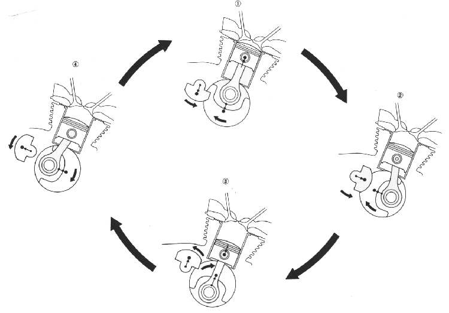
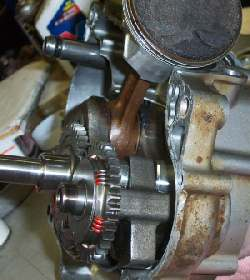
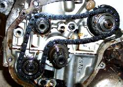
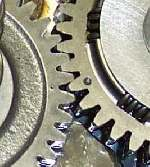
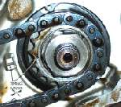
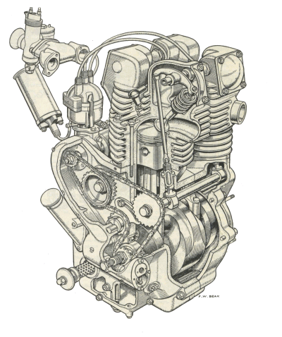
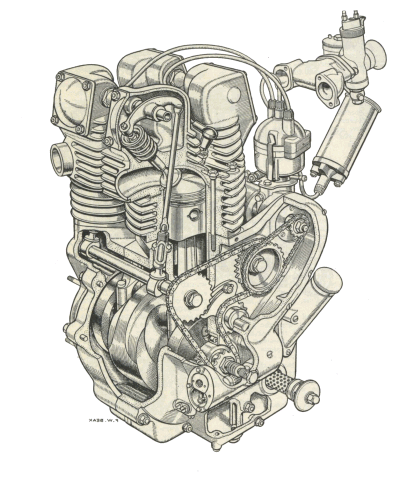

A false balance is abomination to the LORD: but a just weight is his delight.
Proverbs 11:1
¶ Most motorcycle engines vibrate. Some more then others. Some bike engines are smooth, I'll grant you that. I have, personally, balanced a nickel, on the cylinder head of a Honda GL1000, with the engine running 5000 RPM. Smooth is out there, but not every engine is a flat four. The reason the flat, four cylinder engine is so smooth is because the opposing pistons move in and out together. This cancels out the vibration from the opposite cylinder.
On a single cylinder engine, The vibration from the weight of the moving piston is canceled out, in part, by the engines flywheel weight. If the engine has more then one cylinder, there are more whirling masses of metal. This makes things easier to balance. A twin is going to be a bit smoother then a single. A three cylinder engine is going to be a lot smoother and a four smoother still.
Engines with three, four and six cylinders usually do not have Balancers, but some four cylinder machines, like the Yamaha Venture, do have a balancer. Most fours do not. For most singles and twins, we need a Counter Balancer. A single cylinder engine normally has one Counter Balancer and it works like this:
- At "Top Dead Center" (TDC) the upward forces of the piston and connecting rod weight (100%) is off set by the downward flywheel weight (50%) and the Counter Balancer weight (50%). The total imbalance now equals zero.
- At 90 degrees after TDC the forces of the piston and connecting rod is zero. The crankshaft and balancer weights off set each other so they are zero too.
- At "Bottom Dead Center" (BDC) the piston and Counter Balancer weights again oppose each other canceling the inertia of their weights out.
- At 90 degrees "Before Top Dead Center" (BTDC) the weights again cancel each other out.
Twin cylinder engines usually have two Counter Balancers and work in a similar manner as singles cylinder engines.
The balance factor of the crankshaft flywheel weights is changed to match the weight of the Counter balance. Do not remove the Counter Balancer(s) from your engine to get more horse power unless you rebalance the crankshaft flywheel weights.
Counter Balancers come in two types of drives.
- Gear Drive
- Chain Drive
There can be one or two balancers. I suppose you could have more but I've never seen more then two on one engine. They seem to work pretty good. They can turn a ride that causes you to stop every half hour and scratch all over, to a ride that is quite pleasant.
 Gear Drive Counterbalancer |
 Chain Drive Counterbalancer |

Chain Drive Counterbalancers can change as the chain wears. They usually have a way to take up or adjust slack on the chain as it wears. Some Yamaha and Honda twins use adjustable, chain driven, Balancers. Usually, one of the sprockets can move, tightening or loosening the chain. Sometimes the adjuster sprocket is spring loaded. Simply loosen and then tighten the adjuster, and the Balancer chain will be adjusted automatically, at least till the chain is worn out.

Kawasaki 400/440 twins use two, chain driven, Balancers that are not adjustable. When you assemble the engine, match the plated links of the Balancer chain with the mark on each Balancer sprocket. When the chain wears, you must replace it. This entails splitting the crankcases. This may not be as bad as it sounds. I've seen a number of these engines go 30-40,000 miles before problems arise.
Counter Balancers are a good way to smooth out the vibes on single and twin cylinder engines. They must be installed right and if it's got a chain, it must be adjusted right, and remember, chains do wear out.

 |
 |
Copyright © 1999-2005 dansmc.com. All rights reserved.